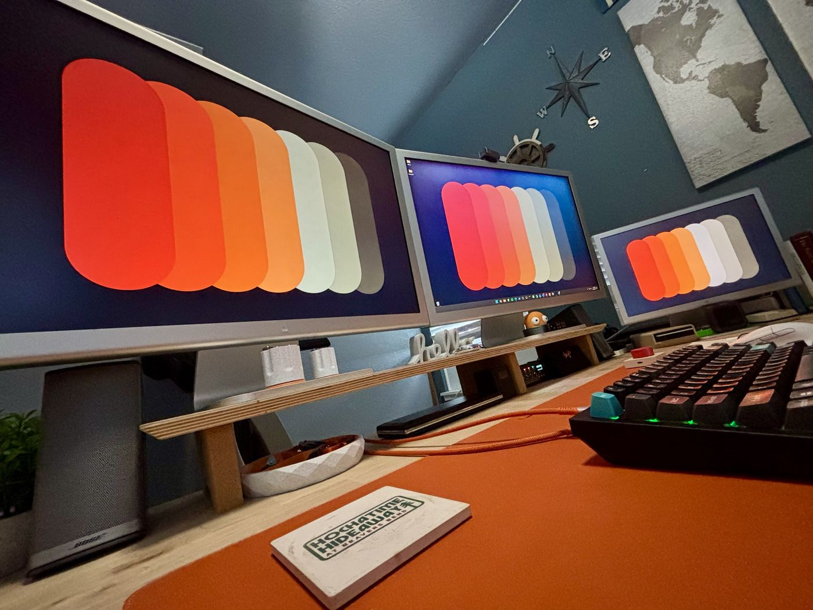
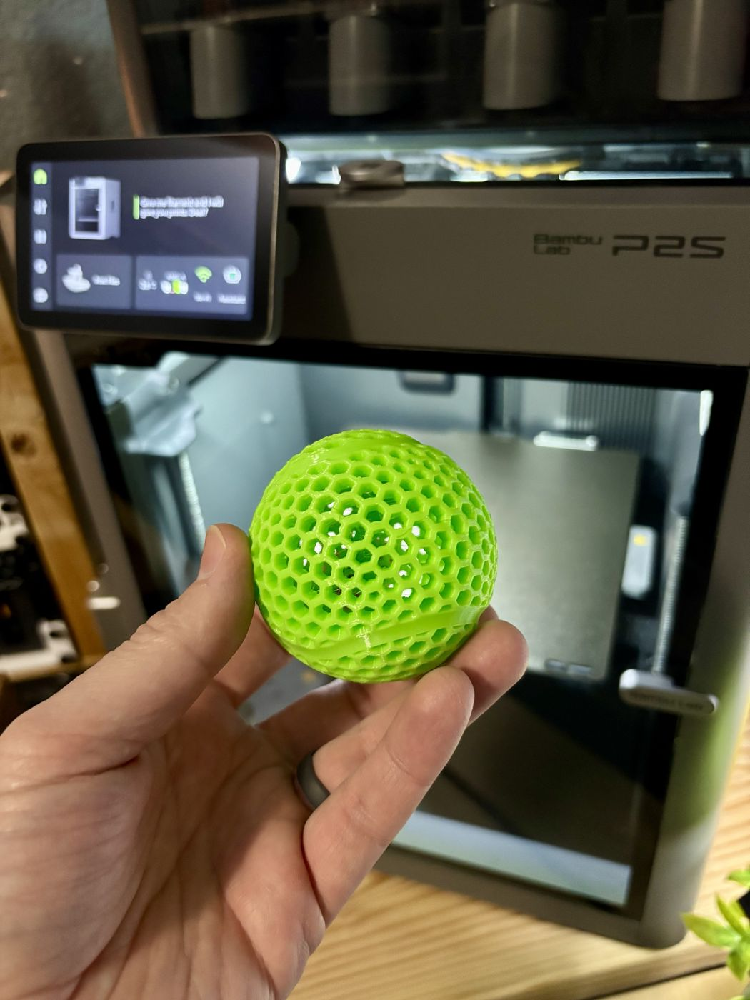
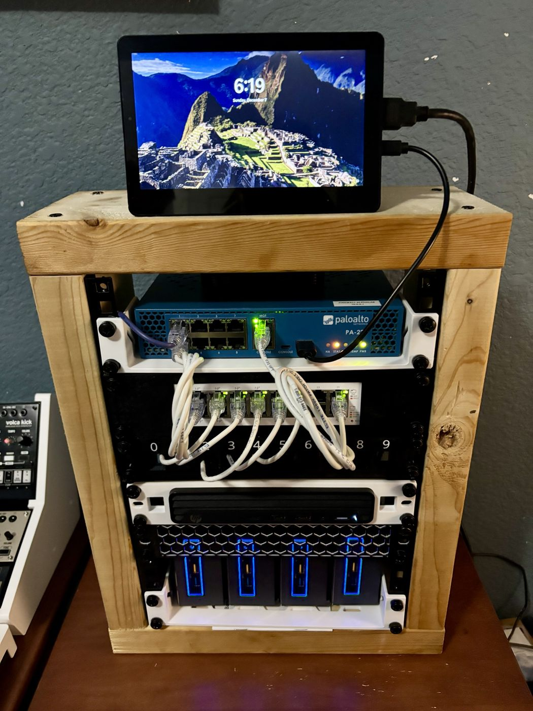
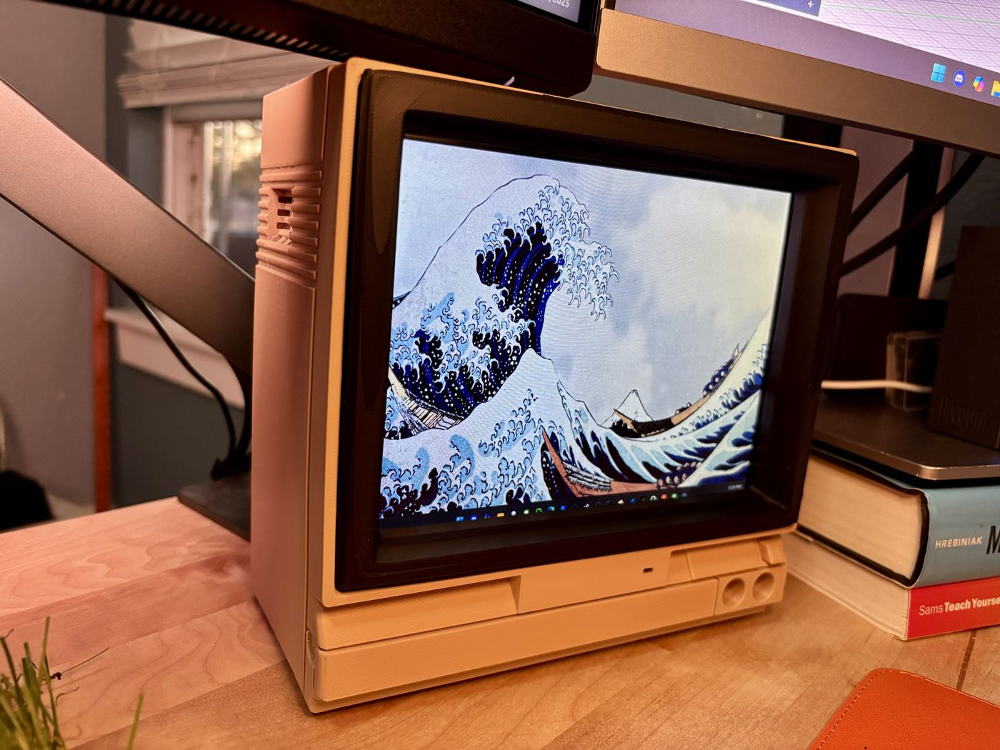
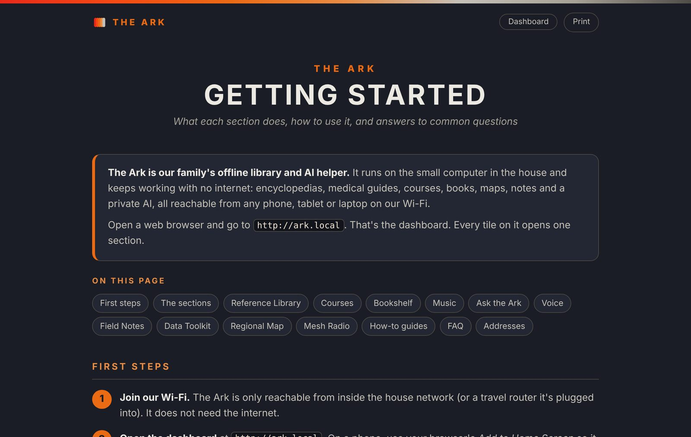
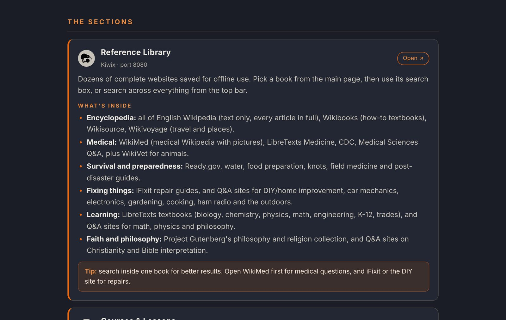
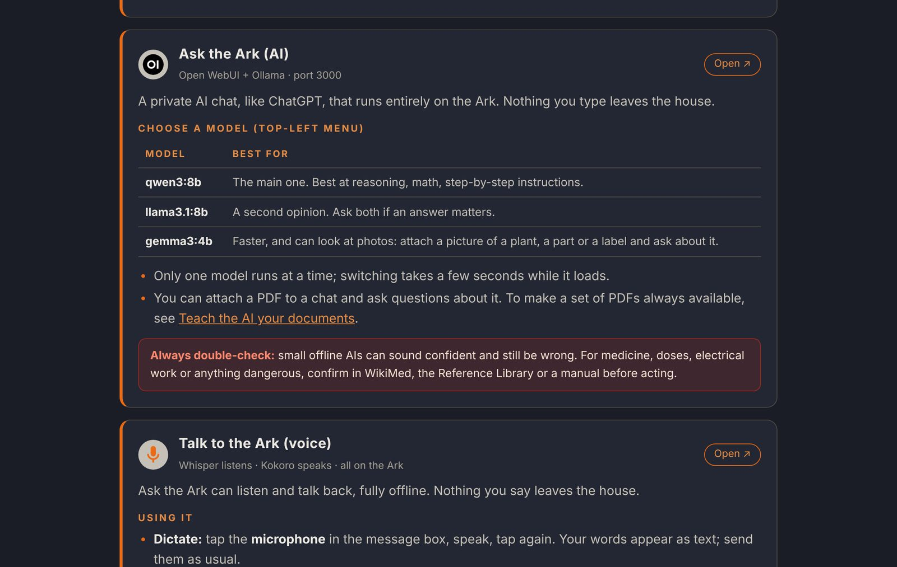

The blueprint
Tinkering, testing, and building it myself
I'm a tech enthusiast who spends most of my free time in the homelab: building servers, wiring up networks and seeing how much I can run on my own hardware. Lately that means machine learning and local AI, with models running privately at home instead of in someone else's cloud.
WhiskeyLab is where I share it all. You'll find the builds, the experiments that worked and the ones that didn't, and straight-talking reviews of the tech and gadgets I get my hands on.
Homelab
Servers, networking, self-hosting and small, efficient builds that run around the clock.
Machine learning
Training, tuning and benchmarking models, and finding out what everyday hardware can really do.
Local AI
Private assistants and models running at home: no subscriptions, no data leaving the house.
Tech & gadget reviews
Hands-on, honest takes on hardware and gadgets, tested in real use rather than on a spec sheet.
From the lab
Where it all happens
A few shots from around the WhiskeyLab: the desk, the rack and whatever just came off the printer.




Featured project
The Ark: an offline library and private AI for the house
The Ark is one small computer that keeps working when the internet doesn't. Any phone, tablet or laptop on the home Wi-Fi opens one dashboard and gets all of Wikipedia, medical and repair guides, full courses, books, music, an offline map and a private AI chat. Nothing ever leaves the house.
It's free and open source, so anyone can build one on their own hardware.
What I customized
- Ask the ArkA local AI that can search the whole library, look at photos, and listen and talk back with offline voice. The models get plain names like "Quick Answers" and "Deep Thinker".
- Ark MechanicA repair assistant that knows your own vehicles and equipment and reads the service manuals you add.
- More on the shelfA bookshelf for books and PDFs, a music server for your own library, shared notes and a data toolkit, all on the same dashboard.
- Regional map and mesh radioA street-level offline map of the area you pick, plus Meshtastic and MeshCore clients for off-grid LoRa messaging.
- Tuned for small hardwareFits on a single 512 GB drive. The AI runs fully on a 6 GB GPU at about 37 words a second, and the whole box draws 25–45 W.
- Easy for the whole familyOpen it at
ark.local, follow a printable Getting Started guide, and check live GPU and power readings on the dashboard.
A look inside



Build your own with one command
On a fresh Ubuntu 24.04, Linux Mint 22 or Debian 12 machine, open a terminal and paste:
sudo apt install -y git && git clone https://github.com/whiskeylabbuilds/the-ark.git ~/ark && cd ~/ark && ./install.sh
- The installer asks before each big step and is safe to run again.
- 16 GB RAM recommended, about 500 GB of disk. A graphics card is optional (NVIDIA or AMD).
Work with WhiskeyLab
Media & review inquiries
Have hardware or tech you'd like reviewed? I'm open to:
- Hardware and gadget reviews
- Homelab, networking and server gear
- AI and machine learning hardware and software
- Collaborations and other media requests